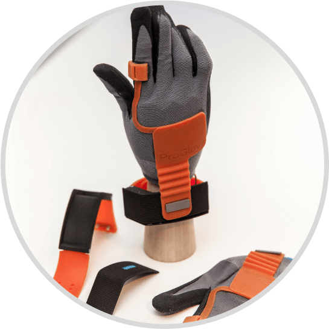

Sector de manufactura
Según la Organización Mundial del Trabajo, en el mundo se producen 2,3 millones de muertes por accidentes laborales y enfermedades derivadas del trabajo

A través de sensores y prendas de vestir se podrá monitorear cuando un empleado está en riesgo o requiere de un apoyo en la correcta ejecución de una tarea.
Por ejemplo, una empresa Alemana tiene un producto llamado PROGLOVE, el cual es un guante que le ayuda a las personas que trabajan en logística y manufactura a realizar sus funciones de forma más eficiente.
Este guante permite integrar cada paso de la operación con los movimientos naturales de la mano con esto, se logra que si se cumplan los procesos de forma eficiente.
